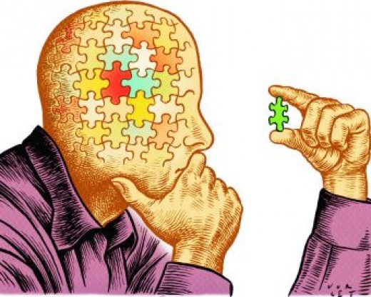

Personality
What Personality Are You?
Personality refers to the combination of characteristics, behaviors, thoughts, and emotions that make each individual unique. It shapes how we interact with the world, influences our reactions to situations, and guides how we relate to others. Psychologists often discuss personality in terms of traits or consistent patterns in a person’s behavior, like extroversion, openness, or conscientiousness
History of the MBTI (Myers-Briggs Type Indicator)
In 1921, Swiss psychiatrist Carl Gustav Jung introduced the concept of psychological types in his book "Psychological Types", proposing that people have innate preferences in how they perceive the world and make decisions. He identified three primary dichotomies: Extraversion (E) vs. Introversion (I) for the orientation of energy, Sensing (S) vs. Intuition (N) for gathering information, and Thinking (T) vs. Feeling (F) for decision-making. Later, a fourth dichotomy, Judging (J) vs. Perceiving (P), emerged, reflecting a preference for a structured versus a flexible lifestyle.
His theory emphasized that these dichotomies represent tendencies rather than rigid categories, allowing for variation and complexity within each individual. Decades later, Jung's concepts were further developed into tools like the Myers-Briggs Type Indicator (MBTI), which expanded the practical application of his ideas for self-awareness, interpersonal relationships, and career development.
Personality Development

Can someone personality change?
Life Experiences: Major life events like becoming a parent, losing a loved one, or changing careers can prompt shifts in personality. For instance, people often become more responsible and conscientious as they take on adult roles and responsibilities.
Aging and Maturity: People’s personalities tend to shift as they age. For example, most people become more agreeable, conscientious, and emotionally stable as they grow older, a trend known as the "maturity principle."
Understand yourself

What good about understand your personality?
1.Better Self-Awareness
2.Improved Decision-Making
3.Enhanced Relationships
4.Increased Resilience and Well-Being
5.Career Satisfaction
6.Personal Growth
Personality and Genetics
Research suggests that personality is influenced by both genetics and environmental factors. Twin studies have shown that genetic factors play a significant role in traits like extraversion and neuroticism, although environmental factors (like upbringing and life experiences) also contribute.
Personality is shaped by an intricate interplay of genetics, environmental factors, and life experiences. Both stable traits and those that evolve over time are influenced by biological, social, and cultural factors, making personality a dynamic and multifaceted aspect of human life.